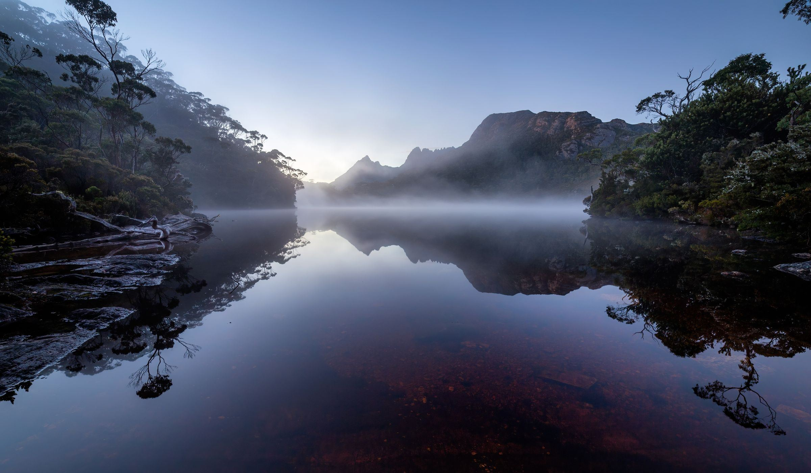
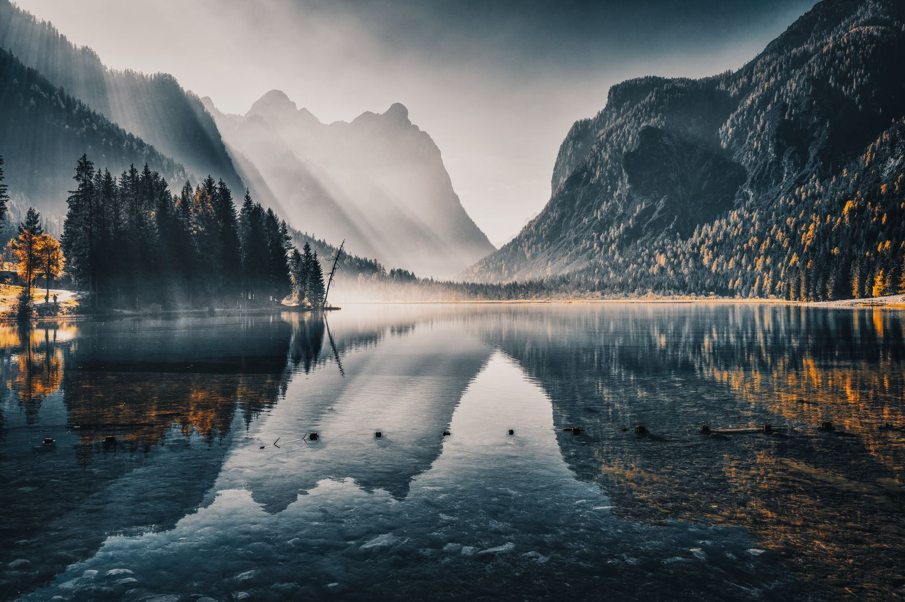
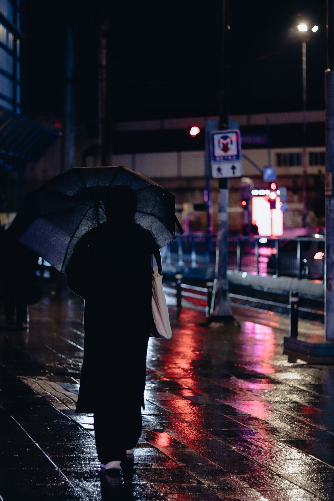
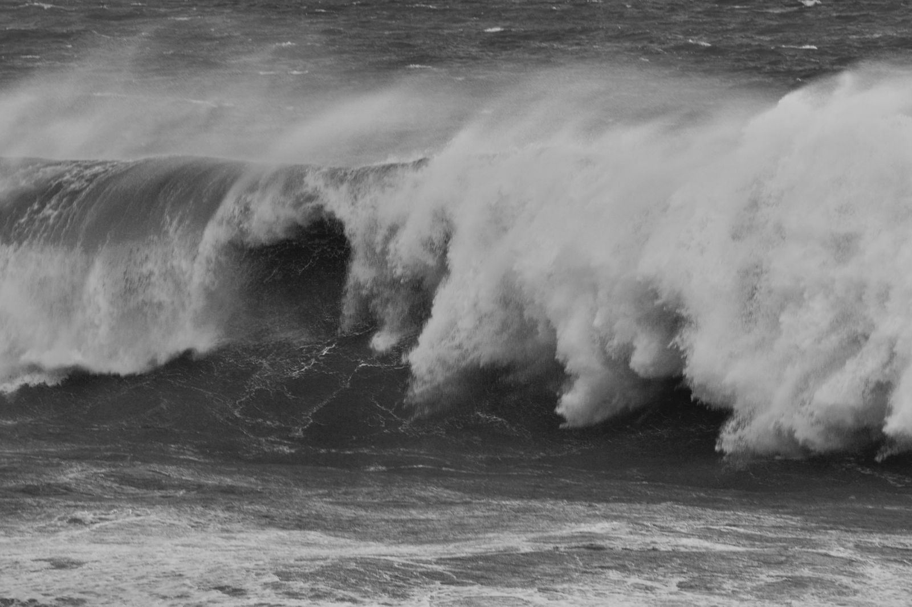
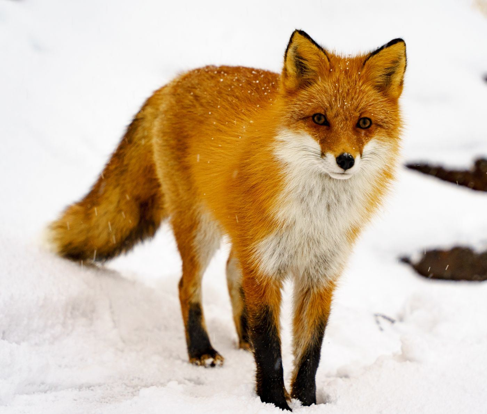
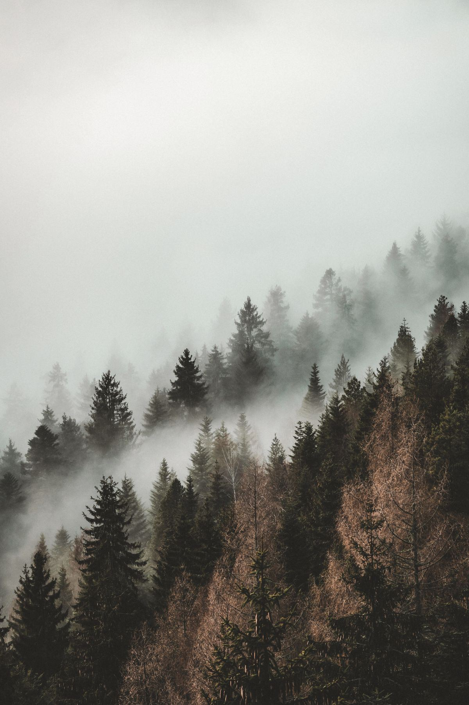
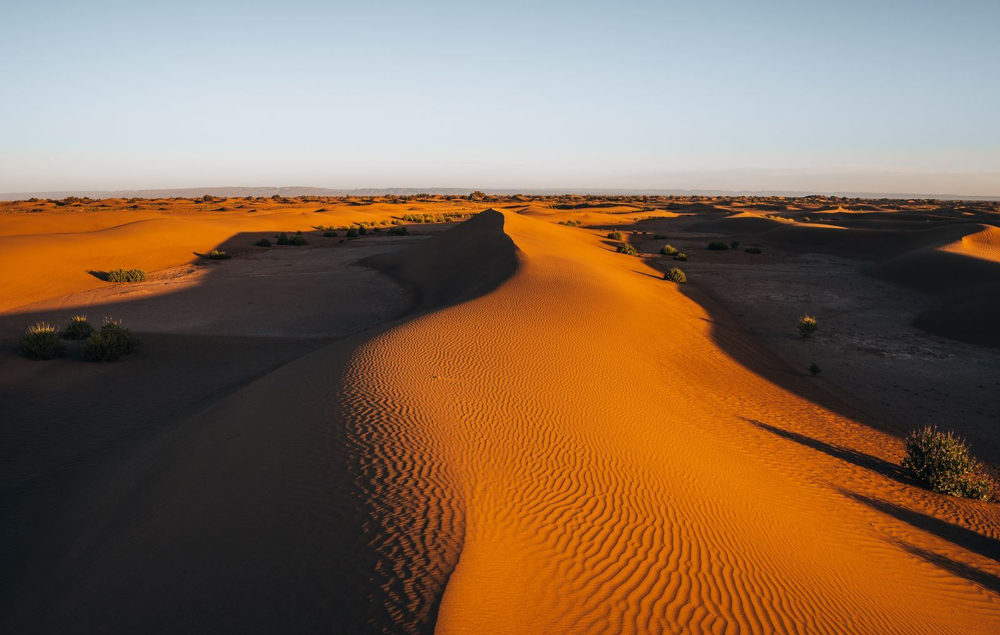
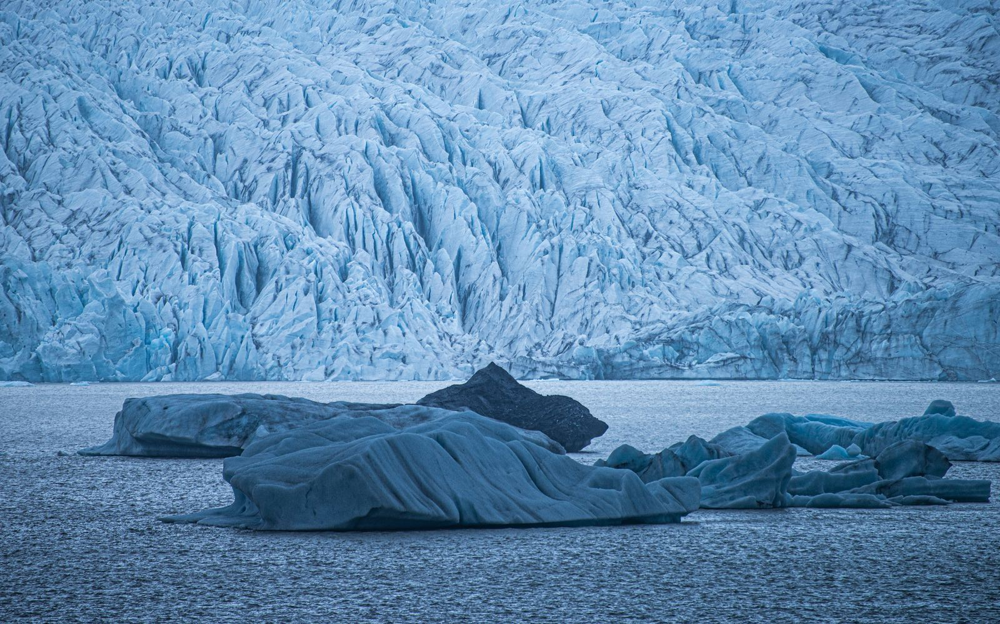
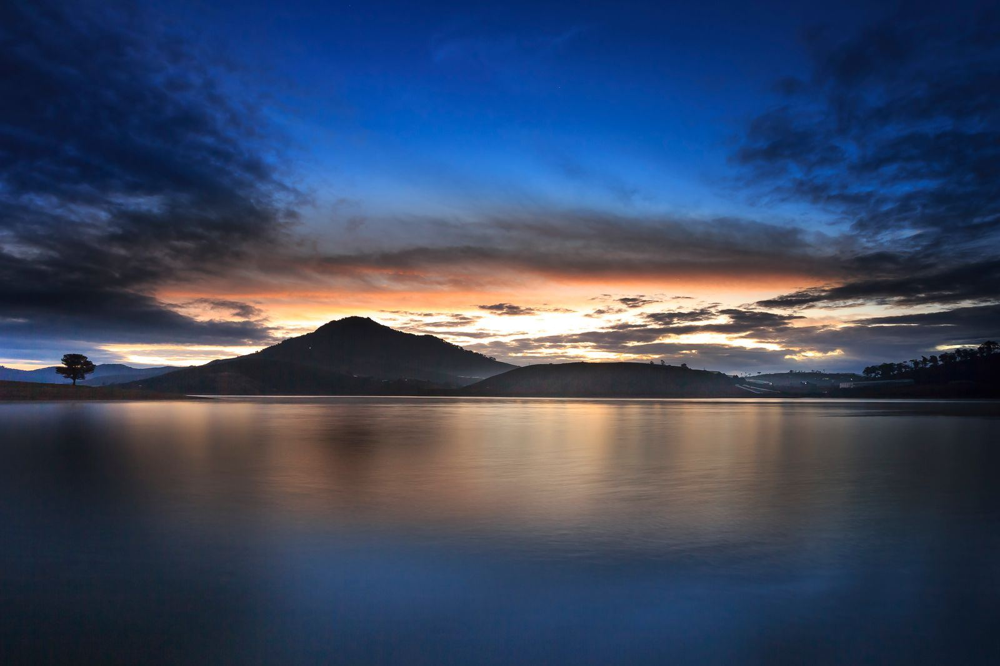
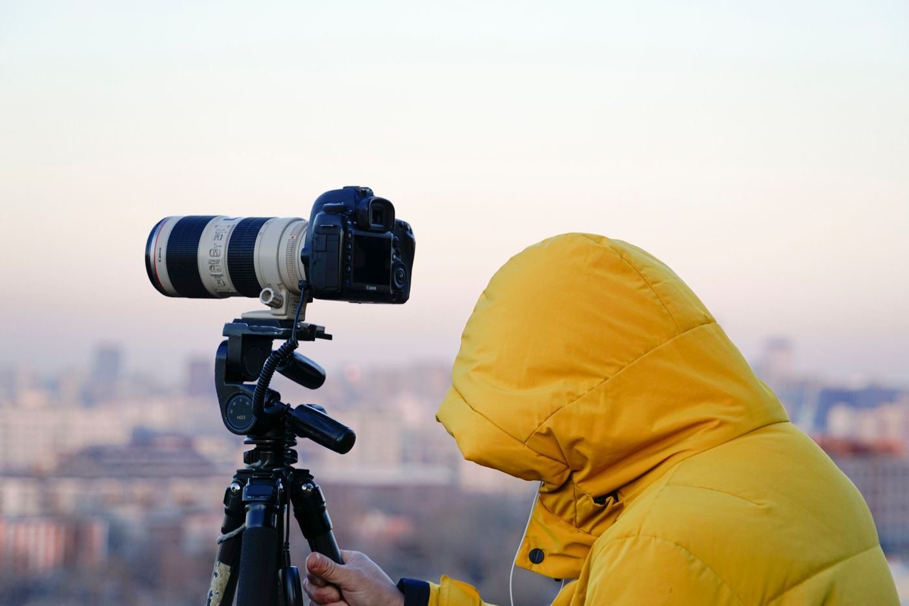

Coastlines, high country and the people in between.
I photograph slowly, mostly at the edges of the day, and print every series on archival cotton rag.








Series

About
Landscape and portrait photographer working across the Southern Tablelands and the coast. Commissions for editorial, tourism and private clients; limited-edition prints of every series.
Contact
For commissions, licensing and print enquiries, write to me. I reply within two days.
hello@example.com